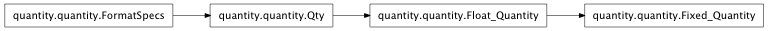
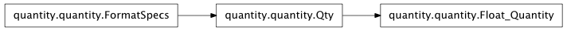
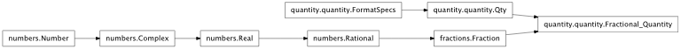
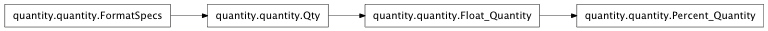
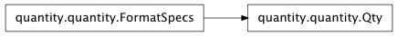

A floating quantity in a non-specific fixed unit.

A real number in particular units. Quantity sub-classes override units and __str__.

Return the number spelt out as words (e.g. eleven or one hundred twenty three).
Mixin class to extend the Format Specification mini-language.
Return a nice representation when dividing by a Quantity (overridden in Fractional_Quantity).
See Fractional_Quantity for a nice fractional representation.
Format :b format displays it as blank when zero. e.g. 0.00:b -> .
Format :i format displays it in integer format, if possible. e.g. 5.00%:i -> 5%.
Format a PayRate Rate, shortening $1,000’s to $k’s, e.g. $50,000pa -> $50k.
Support a /rate format specification, i.e. {value:spec/rate}.
Drop the new format specs. They are only only processed when called explicitly from a Qty sub-class.
Split the new format specifier id out from the format spec.
A Fractional Quantity displays as a Fraction (e.g. 52/12).
This is useful, for example, when converting months to weeks.

Return a nice representation when dividing by a Fraction, e.g. /(52/12) -> *12/52.
Fractions can be displayed with a preferred_demonimator, for convenience. This is instead of the standard python limit_denominator which uses the lowest possible denominator. e.g. 52 weeks / 12 months can be displayed as 52/12 rather than 13/3.
A percentage. Transparently handles a divisor of 100. (e.g. Percent(5) is displayed as 5% and stored as 0.05).

Qty is a base class for objects with a value represented by some Units.

Describe a conversion, e.g. {num:>10/hr}.format(10*dollars) -> $10.00/hr.
Return the formatted Units part only.
Return the formatted Quantity (value part only).
The name of the units.
Unit is a base class that represents a unit for a Quantity.
Return the unit name formatted as a String. (Note: This handles plural forms).
Usage: e.g. rate = 5 * percent
Usage: e.g. pieces = 40*qty